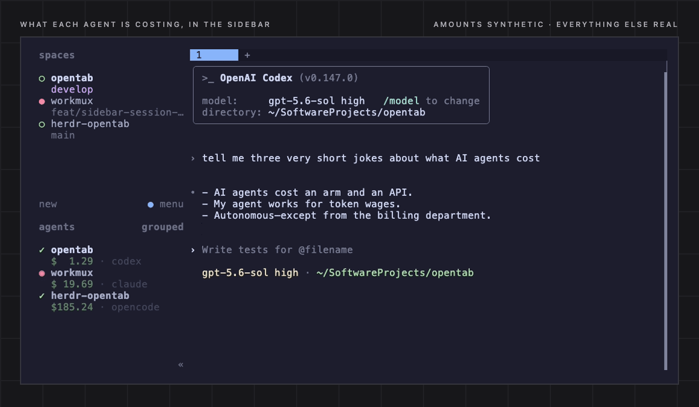

Keep following the evidence
What filled the window? What changed?

Explore session views →

Explore session views →

What Changes captures →
Token economics
Tokens tell one story. Dollars tell another.
A token isn't a unit of cost. Pick a type to see how its share of tokens compares with its share of estimated cost.
Loading the synthetic showcase breakdown…
Synthetic history · All tokens priced at API list rates, rather than mixing recorded spend and estimates. How pricing works →
On a subscription? Your tools may record $0. OpenTab prices that usage at API list rates like these, labeled as estimates, so you can set it against what you pay for the plan.
Recipes
Pick your setup.
A few lines to wire OpenTab into the tools you already live in.
Prices in the Herdr sidebar.
The herdr-opentab plugin puts each running agent’s cost beside it, subagents included, plus how long it has been working or waiting. It updates itself as the session runs. Herdr’s integration for your agent lets two panes in one repo show their own sessions.
Inside Herdr, L in OpenTab reopens a supported session as a new Herdr tab or split.
herdr plugin install hamidi-dev/herdr-opentab
herdr plugin action invoke opentab.setup
herdr server reload-config
herdr integration install claude # or codex, opencode, …
Cost in the status bar, the session one key away.
opentab cost prints the latest session’s cost for the pane’s project, subagents included, fast enough to poll. --goto opens that same session for inspection.
From there, L resumes a supported session in a new tmux window, a split or a popup.
Resuming sessions →# this project's latest session cost, refreshed every 5 s
set -g status-interval 5
set -g status-right '#(opentab cost "#{pane_current_path}") %H:%M'
# prefix + o: open that session in a popup
bind o display-popup -E -w 90% -h 90% \
-d '#{pane_current_path}' 'opentab --goto'Zellij, WezTerm, kitty or anything with a CLI.
OpenTab drives tmux and Herdr on its own. For everything else, drop an executable script at ~/.config/opentab/launcher (chmod +x) and every L launch goes through it: a window, a split or a popup, with the directory and the resume command.
#!/bin/sh
# kind: window | hsplit | vsplit | popup
kind=$1 dir=$2 cmd=$3
case $kind in
window) exec zellij action new-tab --cwd "$dir" -- sh -c "$cmd" ;;
hsplit) exec zellij run --direction right --cwd "$dir" -- sh -c "$cmd" ;;
vsplit) exec zellij run --direction down --cwd "$dir" -- sh -c "$cmd" ;;
popup) exec zellij run --floating --cwd "$dir" -- sh -c "$cmd" ;;
esacLet your agent ask about its own history.
opentab mcp answers usage questions over stdio, with no network port: which project cost the most this month? Why was yesterday’s session so expensive?
Add --allow-raw-content and opt in to the search index, and it can search past conversations across your tools: what did we decide about the cache last week? The index stores conversation text in plaintext on your machine.
{
"mcpServers": {
"opentab": {
"command": "opentab",
"args": ["mcp"]
}
}
}Your plan says $0. What did the work use?
Subscription usage usually records no cost. OpenTab prices those tokens at API list rates, marked as estimates, so you can set a month of usage against what you pay for the plan.
How the money works →- $
- Switch between API-equivalent estimates and recorded spend.
- w
- Price a session’s exact tokens at another model’s rates. Usage stays fixed; it predicts nothing about quality.
- P
- Compare model and provider rates on your own token mix, cache included.
Laptop, workstation, server: one tab.
opentab machines pull fetches usage summaries over SSH and opens them beside this machine’s history. Each remote only needs opentab installed. Nothing runs in the background, nothing listens on a port.
Individual turns are fetched when you open them, and L resumes a session on its own machine over SSH.
Connect your machines →opentab machines pull laptop workstation # SSH host aliases
opentab machines pull # refresh every saved machine
opentab machines open # reopen the last pull offlineOne file to send, nothing to install.
Export a self-contained HTML report that opens offline: overview, trends and model comparisons. Add --include-details for each session’s Turns, Tools and Context; that bundles your prompts too. Links to a month, a day or a session open exactly the part you want to show.
Optional --demo scrambling disguises selected fields; dates and the shape of the data stay real. Personal notes stay out of every report.
opentab --html report.html # overview and trends
opentab web --html full.html --include-details # plus Turns, Tools, Context
opentab --demo --html demo.html # scrambled for sharingJSON for scripts, one line for status bars.
The query commands print one versioned JSON document each. Session keys name the machine and tool, so they never collide. Feed opentab cost to sketchybar, waybar or your prompt; e in the Sessions list exports CSV.
opentab usage summary --range 30d --group-by project --pretty
opentab sessions list --range 7d --from-harness claude --limit 20
opentab cost "$PWD" # ~$1.04Local & read-only. No account, no telemetry. Your tools’ databases and transcripts stay unchanged; OpenTab keeps its own notes, preferences and caches separately. Privacy boundaries →
Settle the tab.
pipx install opentab-ai